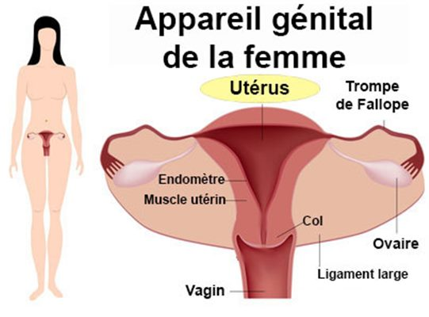

Bienvenue Sur Medical Education
L'hysterectomie
Definition
L'hysterectomie est une intervention chirurgicale qui consiste a enlever partiellement ou totalement l'uterus.

Indications
Fibrome uterin.
Cancer du col de l'uterus.
Hemorragie lors de la delivrance : hysterectomie d'hemostase.
Prolapsus.
Les voies operatoires
Par laparotomie :
Mediane sous ombilicale.
Transversale sus-pubienne (type Pfannenstiel).
Voie vaginale simultanement avec une coelioscopie.
Soins infirmiers en periode pre-operatoire
Preparation psychologique
Relation d'aide individualisee.
Faire verbaliser, exprimer.
Majoration du stress face a la peur de la mort du au cancer.
Examen pre-operatoire
Bilan cardiaque : NFS ; coagulation (TP, TCA) ; groupe sanguin + rhesus + 2 RAI de moins de 3 jours ; uree ; glycemie ; ionogramme ; creatinine ; marqueur tumoraux.
Bilan cardiaque : E.C.G.
Bilan pulmonaire : radiographie.
Bilan gynecologique : echographie abdo-pelvienne ; hysterosalpingographie.
La veille de l'intervention
Soutien psychologique.
Preparation physique afin de prevenir les infections et lesions accidentelles :
Preparation intestinale : lavement evacuateur.
Preparation gynecologique : irrigation vaginale pour nettoyer le vagin et eliminer les caillots.
Repas leger, puis a jeun a partir de minuit.
Champ operatoire et douche antiseptique.
Prise des constantes : pouls, tension arterielle, temperature (l'hyperthermie est une contre-indication a l'operation).
Le jour de l'intervention
Verification du dossier.
Preparation de la personne en fonction de l'heure de l'intervention.
Prise de constante.
Premedication.
Preparation intestinale : lavement evacuateur.
Preparation vesicale : vessie vide, pose d'un sonde urinaire sur prescription medicale.
Preparation pour le bloc : champ operatoire, douche antiseptique, pas de maquillage, pas de bijoux, pas de protheses, blouse de bloc, sur chaussure, charlotte, mettre le bracelet d'identification.
Remplir la fiche de liaison.
Preparation de la chambre :
Menage, aerer, refection de lit.
Verifier le materiel : pied a serum, aspiration, oxygenation, haricot et compresses, fixateur de poche a urine et bocal a diurese, tensiometre et saturometre, materiel pour soins de bouche, verifier le bon fonctionnement de la sonnette, feuille de surveillance.
Soins infirmiers en periode post-operatoire
Surveillance a J0
Verifier la perfusion.
Surveiller la sonde vesicale et la poche.
Surveiller le pansement.
Surveiller le drain de redon.
Surveiller la meche.
Bien installer la personne : allonge sur le dos, tete legerement flechie.
Risques en lien avec l'anesthesie
Alteration de la conscience, reendormissement : faire repondre a des questions simples.
Detresse respiratoire ; la morphine est un depresseur respiratoire.
Agitation.
Hypotension.
Bradycardie / tachycardie.
Hypothermie.
Syndrome de Mendelson : verifier l'absence de nausees, de vomissements.
Risques en lien avec l'intervention
Hemorragie : sueur, peleur, hypotension, bradycardie, douleur abdominale, alteration de la conscience, hypotonie, etat du pansement, quantite du recueil du drain de redon.
Risque thrombo-embolique :
Thrombose veineuse profonde: douleur, chaleur, douleur, dissociation pouls/temperature.
Embolie pulmonaire : douleur thoracique brutal, polypnee, hypoxie, tachycardie, hypotension, angoisse, syncope.
Risque de douleur : evaluer (echelle verbale simple (EVS) ou visuelle analogique (EVA).
Surveillance a J1
Surveillance biologique : NFS, plaquette, ionogramme (car a jeun et perfuse).
Surveillance de la diurese.
Surveillance des constantes.
Surveillance du pansement, drain de redon, ecoulements vaginaux.
Surveillance des douleurs.
Surveillance de la perfusion.
- Toilette au lit car alteration de la mobilite et deficit en auto-soins.
- Toilette perineale 2 fois par jour.
- Premier lever prudent car risque d'hypotension orthostatique, donc prise des constantes.
Soins les jours suivant
- ECBU 48h apres l'ablation de la sonde a demeure.
- Surveillance de la temperature : infection, thrombose veineuse profonde.
- Ablation de la perfusion vers J2.
- Ablation du drain de redon vers J2.
- Surveillance de la reprise du transit : gaz puis selles.
- Reprise de l'alimentation :
- Gaz = J1 : alimentation liquide ; J2 : alimentation semi-liquide ; J3 : alimentation leger.
- Selle = alimentation normale.
- Encourager la mobilite, aide a la toilette au lavabo.
- Refection du pansement e J2-J3 suivant la prescription medicale.
- Ablation des agrafes vers J6.
- Ablation des fils vers J6-J9.
Les conseils a la sortie
Rendez-vous avec le chirurgien 6 semaines apres la sortie.
Suivi gynecologique.
Convalescence de 4 semaines.
Repos. Si fatigue intense, voir le medecin car possibilite d'avoir une carence en fer.
Pas de bain pendant 1 mois. Possibilite de prendre une douche sauf si cicatrice inflammatoire.
Ne pas porter de charge lourde.
Pas d'exercice physique.
Attendre la cicatrisation interne avant d'avoir des rapports sexuels.
Surveiller si pertes vaginales sanglantes ou nauseabondes.
Surveiller la temperature.
Ne pas rester trop longtemps assis.
Voir aussi :
Physiologie de l'accouchement
Module Gynecologie Maternite